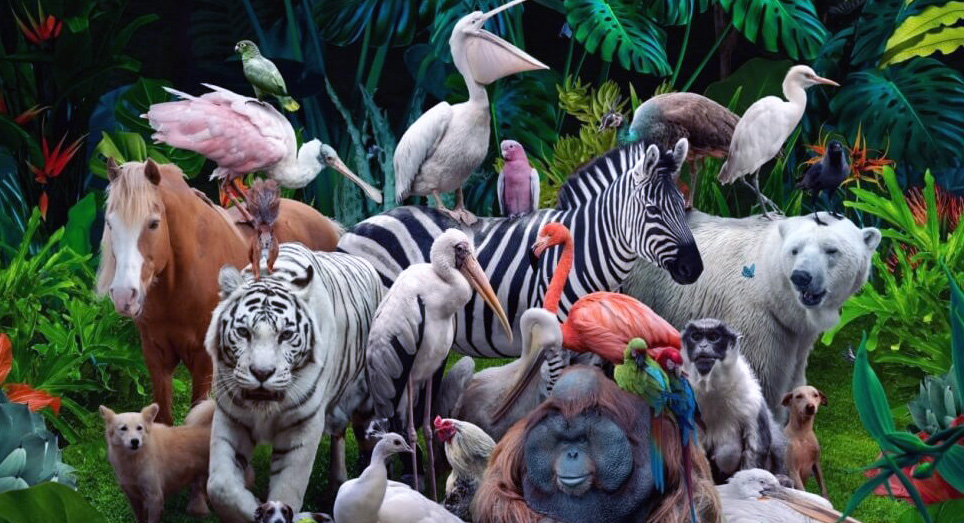

Fauna adalah seluruh jenis hewan yang hidup di suatu wilayah atau zaman tertentu. Istilah ini mencakup semua kelompok hewan, dari ukuran kecil seperti serangga hingga hewan besar seperti mamalia.
Pengertian lengkap
Fauna darat: Hewan di hutan, padang rumput, atau gurun.
Fauna Akuatik (Air): Hewan yang hidup dan beraktivitas di dalam lingkungan perairan, baik di air tawar (sungai, danau) maupun air asin (laut).
Fauna Udara (Aerial): Hewan yang menghabiskan banyak waktu melayang atau terbang di udara.
Pembagian Fauna di Indonesia
Fauna Asiatis (Barat): Memiliki kemiripan dengan benua Asia. Didominasi mamalia besar dan primata.
Fauna Peralihan (Tengah): Hewan endemik khas Indonesia yang dipisahkan oleh Garis Wallace dan Garis Weber.
Fauna Australis (Timur): Memiliki kemiripan dengan benua Australia. Didominasi hewan berkantung dan burung berwarna cerah.
Gajah Sumatera (Contoh Fauna Asiatis)
Komodo (Contoh Fauna Peralihan)
Cendrawasih (Contoh Fauna Australis)

Banyak spesies fauna di dunia saat ini mengalami penurunan populasi akibat perusakan habitat, perburuan liar, dan perubahan iklim. Kamu dapat membaca detail informasi seputar perlindungan habitat dan keanekaragaman hayati melalui
Artikel Fauna di Wikipedia.
Peran Fauna dalam Ekosistem dan Manusia
Fauna berperan penting dalam menjaga keseimbangan alam melalui rantai makanan, membantu penyerbukan tanaman, dan menyebarkan benih untuk regenerasi hutan.
Bagi manusia, fauna menyediakan sumber pangan, membantu sektor pertanian, serta menjadi objek penelitian ilmu pengetahuan dan pariwisata.